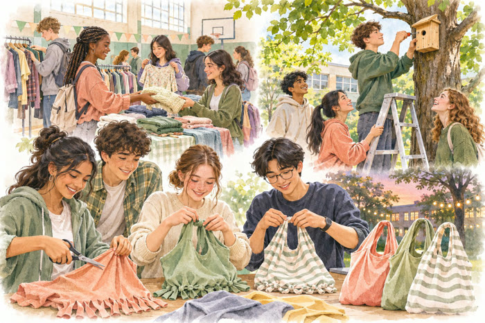

Listen to the text
Speed:

Last Friday there were no ordinary lessons at School No. 3. The student council had organised the first Eco Day, and the whole building, from the gym to the attic, was turned into a green festival. Here is the report of our school newspaper. The day began in the hall with a guest. Ms Oksana Demchuk is an ecologist who studies the rivers of our region. She didn't frighten us with terrible numbers. She showed two jars of water from the same river: one taken above the town and one below it. The second one was grey. "This is what a town of forty thousand people adds to a river in one day," she said. Nobody laughed. After the talk students chose workshops. In Room 7 the Art teacher showed how to make reusable shopping bags from old T-shirts without a needle. In the lab the Chemistry club made soap and washing powder that don't poison water. In the yard a park ranger from the national park taught us to build bird boxes and explained which birds would use them. Forty-two boxes were made, and each class took one home to its own tree. The most popular place was the gym, where a huge clothes swap was held. The rule was simple: bring a thing that you don't wear, take a thing that you like. By noon three hundred items had found new owners. A Year 6 boy went home in a jacket that used to belong to the PE teacher. In the canteen lunch was served without plastic. Students who had brought their own cups got free compote. The cook counted that the school had managed to reduce its rubbish that day by two large bags. At the end the council announced three decisions. First, drinking fountains will be put on every floor, so nobody will have to buy water in plastic bottles. Second, the clothes swap will be held every season. Third, each class will look after one tree in the schoolyard. "One Eco Day doesn't save the planet," said the head of the council, Yevheniia from Year 10. "But it shows that being green is not difficult and not boring. It can even be fun." The bird box of class 9-A already has guests: a pair of great tits moved in on Monday.
Tap any sentence to hear it again.
Сподобалось? На сайті ще більше матеріалів для вчителів!
Reader, презентації, ігри, діагностичні та контрольні роботи до підручників 1-11 класів.
Перейти на сайт materials.allaenglish.com